Disaggregated Serving in TensorRT LLM#
By NVIDIA TensorRT LLM Team
In the past tech blogs, we have introduced optimization specifically for low-latency and throughput oriented optimizations. For production deployment, users also care about per GPU throughput satisfying certain latency constraints. In this tech blog, we will introduce the design concept and usage of the TensorRT LLM disaggregated serving which directly targets throughput@latency performance scenarios, together with performance study results.
Motivation#
LLM inference has two stages: context (prefill) and generation (decode) phases. The context phase computes KV cache for prompt tokens whereas the generation phase generates tokens one by one using cached values. These phases have different compute characteristics.
There are two ways of serving LLM inference requests:
Aggregated LLM serving (sometimes it is also called IFB in this tech blog), in which the context and generation phases are run on the same GPU.
Disaggregated LLM serving, in which the context and generation phases are run on different GPUs.
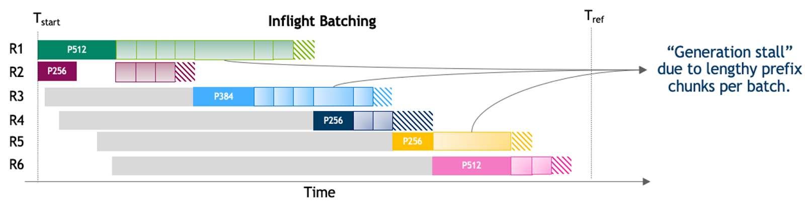
Figure 1. The execution timeline of aggregated LLM serving
In aggregated LLM serving, both the context and generation phases share the same GPU resources and parallelism strategy. This can lead to interference where context processing delays token generation, increasing token-to-token latency (TPOT) and reducing interactivity. This is illustrated in Figure 1 which shows the execution timeline for aggregated LLM serving. Aggregated LLM serving also forces a single GPU type and parallelism configuration for both phases, even though their compute needs differ. As a result, optimizing for one metric such as time-to-first-token (TTFT), often comes at the expense of another metric such as TPOT.
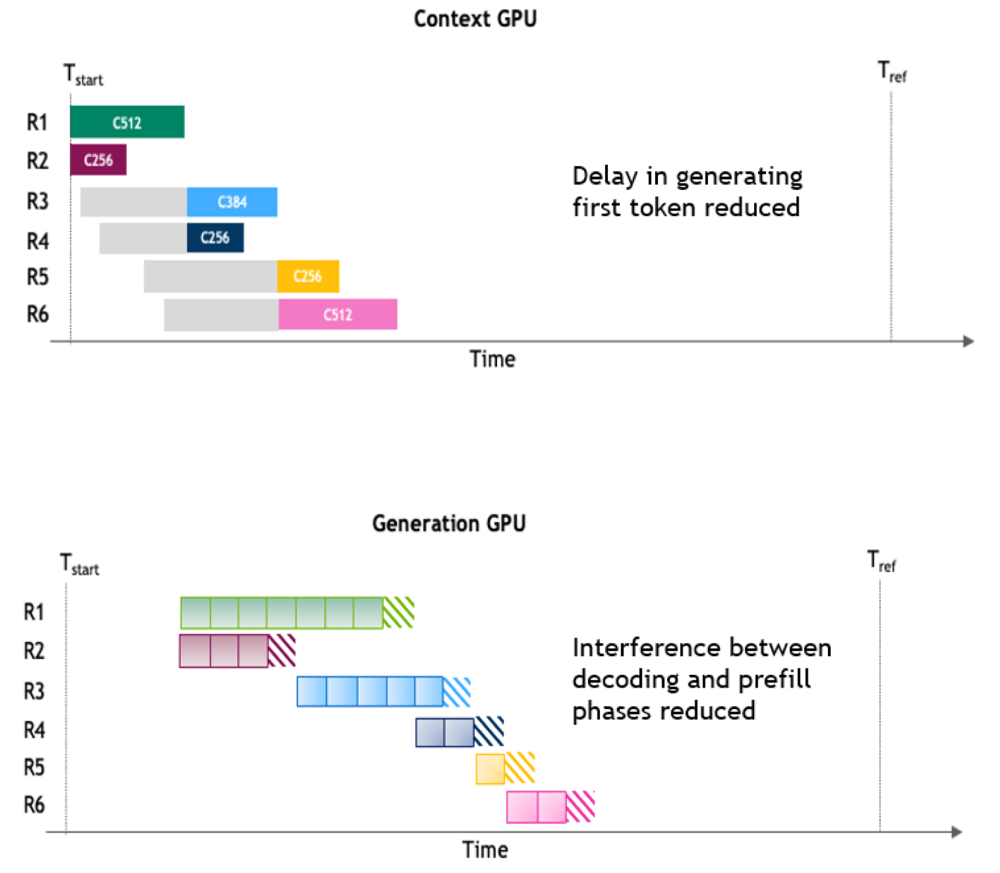
Figure 2. The execution timeline of dis-aggregated LLM serving
Disaggregated serving resolves these challenges by decoupling the two phases, allowing each to run on separate GPU pools and using different parallelism strategies. This separation removes the interference between context and generation phases, as shown in Figure 2, and enables independent optimization of TTFT and TPOT. Although disaggregation incurs overhead for transferring the KV cache blocks from context to generation GPUs, the advantages can be substantial—particularly for workloads with long input sequences and moderate output lengths where interference is most severe.
You can also refer to this paper for more details about the rationale and design considerations of disaggregated serving.
Disaggregated Serving in TensorRT LLM#
There are three different approaches to do disaggregated LLM inference with TensorRT LLM, where each approach offers distinct architectural and operational characteristics suited to different deployment scenarios.
trtllm-serve#
trtllm-serve is a
command-line utility that facilitates the deployment of an
OpenAI-compatible server for TensorRT LLM instances.
The first approach to do disaggregated LLM inference with TensorRT
LLM involves launching a separate OpenAI-compatible server per context
and generation instance using trtllm-serve. An
additional server, referred to as the “disaggregated” server, is also
launched with trtllm-serve and acts
as an orchestrator which receives client requests and dispatches them to
the appropriate context and generation servers via OpenAI REST API.
Figure 3 below illustrates the disaggregated serving workflow when using
this approach. When a context instance is done generating the KV blocks
associated with the prompt, it returns a response to the disaggregated
server. This response includes the prompt tokens, the first generated
token and metadata associated with the context request and context
instance. This metadata is referred to as context parameters (ctx_params in Figure
3). These parameters are then used by the generation instances to
establish communication with the context instance and retrieve the KV
cache blocks associated with the request.
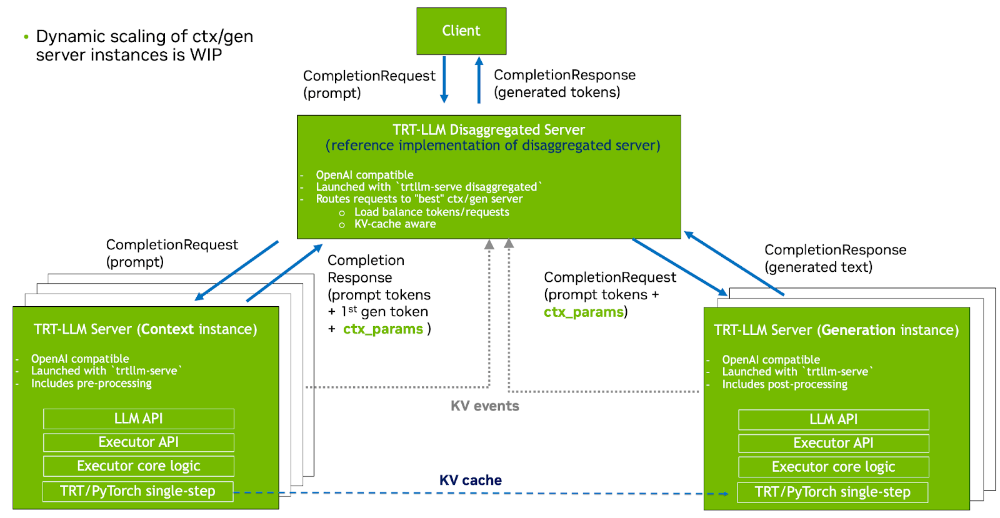
Figure 3. `trtllm-serve` integration with disaggregated service
In the example below, two context servers are launched on ports 8001
and 8002, and two generation servers are launched on ports 8003 and
8004. Finally, a disaggregated server is also launched using trtllm-serve. The
disaggregated server will receive client requests on port 8000, and do
the orchestration between the context and generation servers.
# Launching context servers
trtllm-serve TinyLlama/TinyLlama-1.1B-Chat-v1.0 --host localhost --port 8001 --kv_cache_free_gpu_memory_fraction 0.15 &> output_ctx0 &
trtllm-serve TinyLlama/TinyLlama-1.1B-Chat-v1.0 --host localhost --port 8002 --kv_cache_free_gpu_memory_fraction 0.15 &> output_ctx1 &
# Launching generation servers
trtllm-serve TinyLlama/TinyLlama-1.1B-Chat-v1.0 --host localhost --port 8003 --kv_cache_free_gpu_memory_fraction 0.15 &> output_gen0 &
trtllm-serve TinyLlama/TinyLlama-1.1B-Chat-v1.0 --host localhost --port 8004 --kv_cache_free_gpu_memory_fraction 0.15 &> output_gen1 &
# Launching disaggregated server
trtllm-serve disaggregated -c disagg_config.yaml# disagg_config.yaml
hostname: localhost
port: 8000
context_servers:
num_instances: 2
router:
type: round_robin
urls:
- "localhost:8001"
- "localhost:8002"
generation_servers:
num_instances: 2
urls:
- "localhost:8003"
- "localhost:8004"The disaggregated server supports various load balancing strategies, including round-robin and KV cache-aware routing. Although it currently supports a fixed number of context and generation instances, the architecture is designed to be extensible, and efforts are underway to enable dynamic scaling.
For more information on this approach to do disaggregated serving, please refer to the example.
Dynamo#
The second approach involves the use of Dynamo, a data center-scale inference server developed specifically for LLM workloads. Dynamo introduces several advanced features not present in the other methods, including decoupled pre- and post-processing workers, which are particularly beneficial under high concurrency conditions. The disaggregated LLM inference workflow with Dynamo is illustrated in Figure 4.
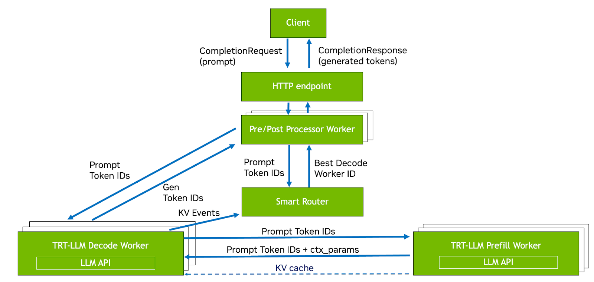
Figure 4. Dynamo integration with disaggregated service
In the Dynamo workflow, requests are initially processed by pre- and post-processing workers, which then query a smart router to determine the optimal decode worker to route the requests to. Depending on the availability of KV cache blocks, the decoder worker may bypass the prefill stage or forward the request to the prefill worker. Once the prefill worker is done processing the prompt, the KV cache blocks can be sent from the prefill worker to the decoder worker, using the metadata referred to as ctx_params in the figure above.
Dynamo also includes built-in support for Kubernetes deployment, monitoring, and metrics collection. The development team is actively working on enabling dynamic instance scaling, further enhancing its suitability for production environments.
For more information on how to use Dynamo with TensorRT LLM, please refer to this documentation.
Triton Inference Server#
The third approach to do disaggregated LLM inference with TensorRT LLM utilizes the Triton Inference Server. With this approach a Triton ensemble model is employed, comprising a preprocessor, an orchestrator implemented as a Python business logic scripting (BLS) backend, and a post-processor. The orchestrator is responsible for routing client requests to context and generation instances, managing the flow of prompt tokens, and handling the return of generated tokens. This approach is illustrated in Figure 5. The Triton Inference Server approach relies on the Triton TensorRT LLM backend and the Executor API, which is supported only for the TensorRT backend. For more information on how to use this approach, please refer to this documentation.
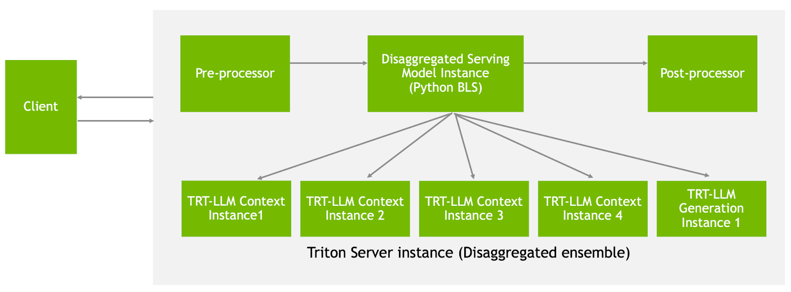
Figure 5. Triton integration with disaggregated service
KV Cache Exchange#
Multi-backend Support#
In TensorRT LLM, the KV cache exchange is modularly decoupled from the KV cache manager and the underlying communication libraries, as shown in Figure 6. The KV cache exchange module is responsible for efficient transmission and reception of the cache, promptly releasing cache space, and performing cache layout conversions during the exchange process. Currently, mainstream communication protocols—MPI, UCX, and NIXL—are all supported by TensorRT LLM, and the underlying communication protocols utilize RDMA / NVLink. Currently, we recommend using UCX and NIXL backends, as we are adding a dynamic scaling mechanism on top of them—specifically, dynamic node joining and leaving. This allows customers to adjust the load based on traffic demands or switch roles between context and generation dynamically.
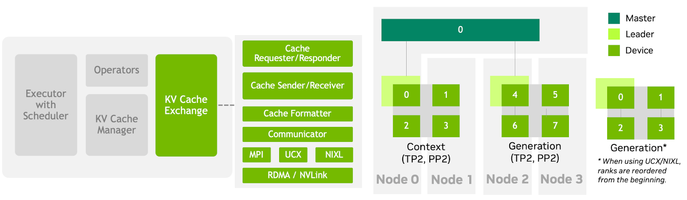
Figure 6. KV cache exchange architecture
Overlap Optimization#
To optimize the overall performance of disaggregated serving, TensorRT LLM overlaps the KV cache transmission with computation for multiple independent requests. While one request is sending or receiving its KV cache blocks, other requests can proceed with computation, as illustrated in Figure 7. Furthermore, if context and generation instances are using multiple GPUs per instance, KV cache transmission between different sets of GPUs can occur in parallel.
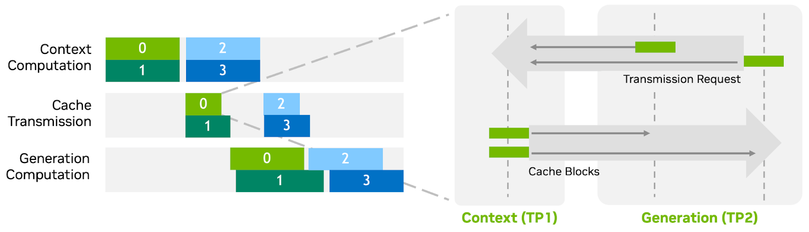
Figure 7. KV cache exchange timing diagram
Cache Layout Transformation#
To minimize KV cache transmission latency, TensorRT LLM currently uses direct transmission between device memories for cache transfer. The KV cache transmission supports using different parallel strategies for the context and generation phases. In such cases, careful orchestration of KV cache block mapping is required. Figure 8 illustrates this using the example of context phase with TP2 and generation phase with PP2.
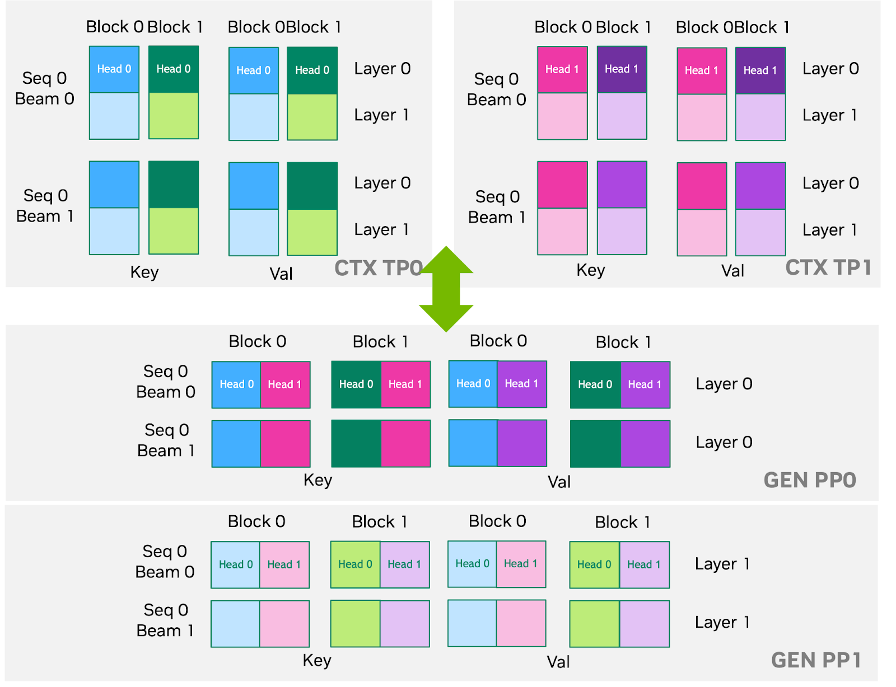
Figure 8. KV cache layout conversion
The optimizations required for KV cache transmission vary depending on whether it’s single-node multi-GPU, multi-node multi-GPU, or different GPU models. To accommodate this, TensorRT LLM provides a set of environment variables for selection in different environments. Please refer to this document for details.
Performance Studies#
Measurement Methodology#
Generating a performance curve for disaggregated LLM serving requires an exhaustive sweep across all parallelization strategies. This includes combinations of TP/EP/DP/PP and other optimizations like speculative decoding (such as MTP). These combinations must be evaluated separately for context and generation stages. As the number of context (CTX) and generation (GEN) servers increases, the number of possible configurations grows exponentially.
To identify optimal configurations, a two step process is used:
Rate Matching
Measure request throughput (request/s/GPU) for context servers for different TP/EP/DP/PP mapping that meet the TTFT constraint, choose the most efficient configuration.
Measure total throughput (tok/s) and latency (tok/s/user) for generation servers from different TP/EP/DP/PP mappings, concurrency levels and speculative decoding turned on/off.
Find the ratio of context to generation workers such that aggregated throughput of context servers matches the aggregated throughput of generation servers for the workload’s input sequence length (ISL) and output sequence length (OSL)
Calculate the throughput per GPU using the formula:
Once the ideal ratio of context to generation servers is computed, the “rate-matched” Pareto curve can be constructed to identify the best configuration to use at different latencies (tok/s/user)
E2E measurement
Benchmark
trtllm-servedisaggregated setups for the most promising configurations taking into account practical limits in terms of total number of GPUs available.
DeepSeek R1#
We conducted performance testing on DeepSeek R1 based on datasets with different ISLs and OSLs. All experiments below were conducted on GB200 GPUs.
ISL 4400 - OSL 1200 (Machine Translation Dataset)#
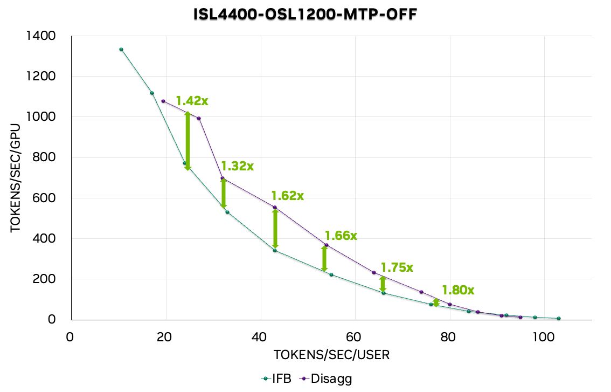
Figure 9. “Rate-matched” Pareto curve for DeepSeek R1 without MTP
Figure 9 shows the rate-matched Pareto curve for DeepSeek R1 with MTP off. Configurations with attention DP and attention TP were considered, with 4, 8, 16 or 32 GPUs per instance. The speedups obtained with disaggregation range from 1.4x to 1.8x, especially at lower concurrency levels.
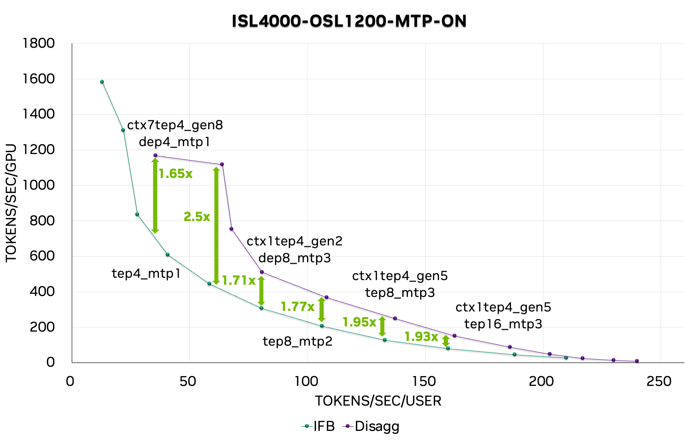
Figure 10. DeepSeek R1 with MTP Pareto curve
For some data points on the performance curve, the context/generation
instance number is shown with the corresponding parallelism mapping
employed for each instance. For example, CTX=1xTEP-4|GEN=2xDEP-8
means 1 TEP4 context instance and 2 DEP8 generation instances constitute
a full LLM serving instance.
As shown in Figure 10, enabling MTP increases speedups of disaggregation over aggregation further, reaching 1.6x to 2.5x, averaging 20 – 30 % higher than MTP-off.
ISL 8192 - OSL 256 (Synthetic Dataset)#
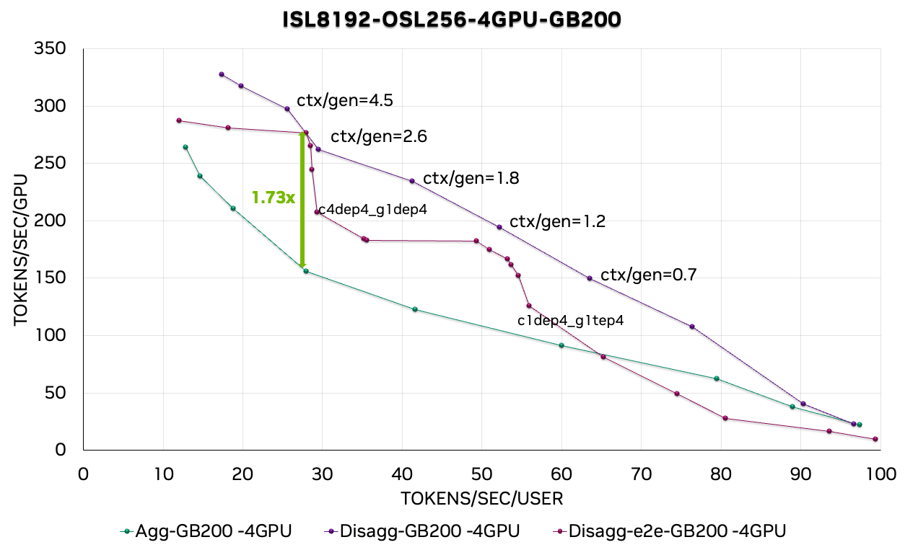
Figure 11. DeepSeek R1 4-GPU Pareto curve. ctx/gen=4.5 means SOL rate matching between context and generation phase, which is only used for SOL perf result collection purpose. c4dep4_g1dep4 means 4 DEP4 context instances plus 1 DEP4 generation instance form a full LLM serving instance.
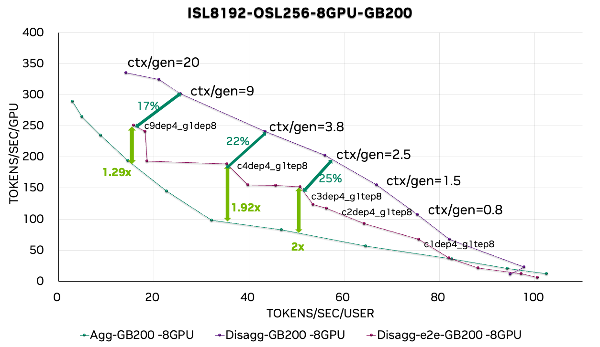
Figure 12. DeepSeek R1 8-GPU Pareto curve
Figures 11 and 12 show the performance curves for the ISL8192-OSL256 dataset on DeepSeek R1 using 4 GPUs per generation instance (GEN4) and 8 GPUs per generation instance (GEN8) respectively. With disaggregation, we plot both “rate-matched” results (based on perfect rate matching between context and generation phases) and E2E results (which can be directly reproduced by users in production deployment environments).
The results show that for this ISL/OSL setting, disaggregated serving outperforms aggregated serving significantly—achieving up to 1.73x speedup with GEN4 and up to 2x with GEN8.
By comparing the disaggregated serving E2E results with the “rate-matched” curve, we observe a performance gap of 0–25%. This discrepancy is expected, as SOL performance relies on idealized assumptions—such as fractional ctx:gen ratios and the absence of KV cache transfer overhead.
ISL 4096 - OSL 1024 (Machine Translation Dataset)#
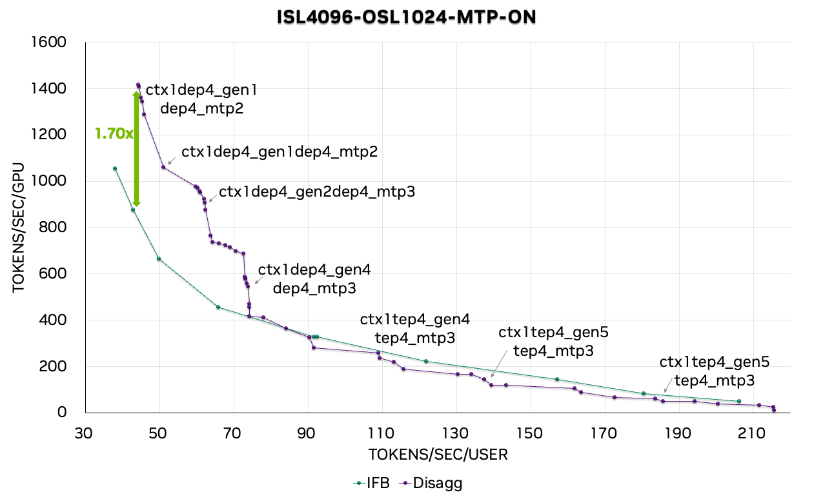
Figure 13. DeepSeek R1 E2E Pareto curves with MTP = 1, 2, 3. In this figure, ctx1dep4-gen2dep4-mtp3 means 1 DEP4 context instance plus 2 DEP4 generation instances with MTP = 3.
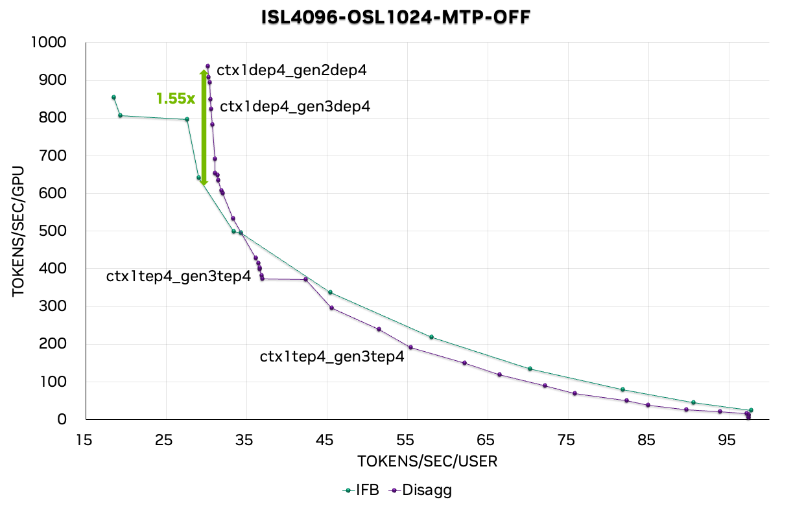
Figure 14. DeepSeek R1 E2E Pareto curves without MTP.
In Figure 13 and 14, the E2E Pareto curves for aggregated serving and disaggregated serving, with and without MTP are shown.
For Pareto curves with MTP = 1, 2, 3, it can be observed that disaggregated results show a 1.7x improvement over aggregated results at 50 tokens/sec/user (20 ms latency). Enabling MTP provides a larger speedup at higher concurrencies.
Qwen 3#
ISL 8192 - OSL 1024 (Machine Translation Dataset)#
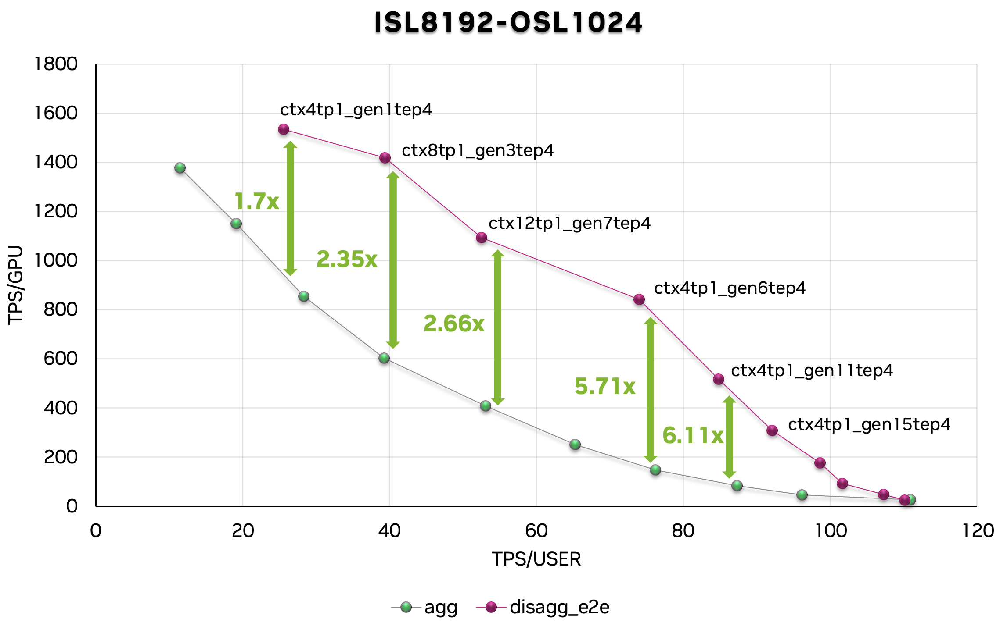
Figure 15. Qwen 3 Pareto curves.
We also conducted performance evaluations of Qwen 3 on GB200 GPUs. The data indicate that the speedups achieved by disaggregation over aggregation range from 1.7x to 6.11x.
Reproducing Steps#
We provide a set of scripts to reproduce the performance data presented in this paper. Please refer to the usage instructions described in this document.
Future Work#
Although we can already demonstrate the performance benefits of doing disaggregated LLM inference with TensorRT LLM, there is still work to be done to further improve the performance and ease of use. Among other things, we plan to:
Provide detailed steps and scripts to automate the generation of throughput-latency performance curves comparing aggregated with disaggregated.
Continue to improve performance at larger scales (large-scale EP for example).
Support dynamic scaling of context and generation instances based on traffic load.
Support overlapping KV cache communication and compute on a per-layer basis.
Acknowledgement#
Adding support for disaggregated serving in TensorRT LLM is a typical one-team effort requiring close collaboration spanning kernel-level optimizations, runtime enhancements, and systematic performance analysis and tuning. While we cannot individually acknowledge every contributor, we are proud to recognize the dedicated team of engineers whose collective expertise has helped advance the state-of-the-art in terms of performance in TensorRT LLM. Through this collaborative endeavor, we have developed valuable insights to allow us to improve GPU utilization for large language model inference. We hope that the techniques and the experience shared in this blog will help the developer community better leverage NVIDIA GPU capabilities in their mission-critical LLM inference applications.